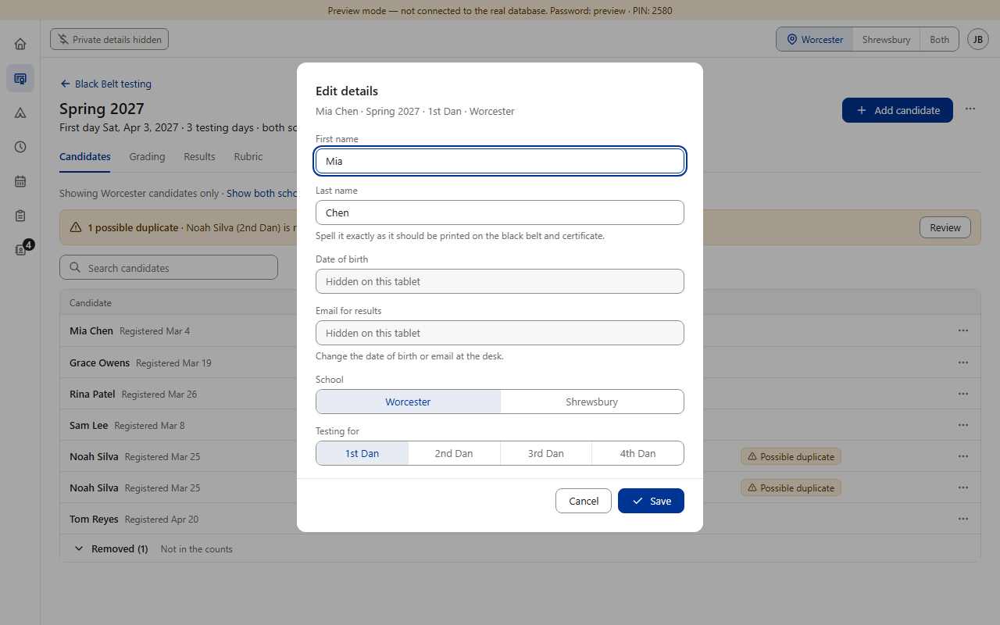
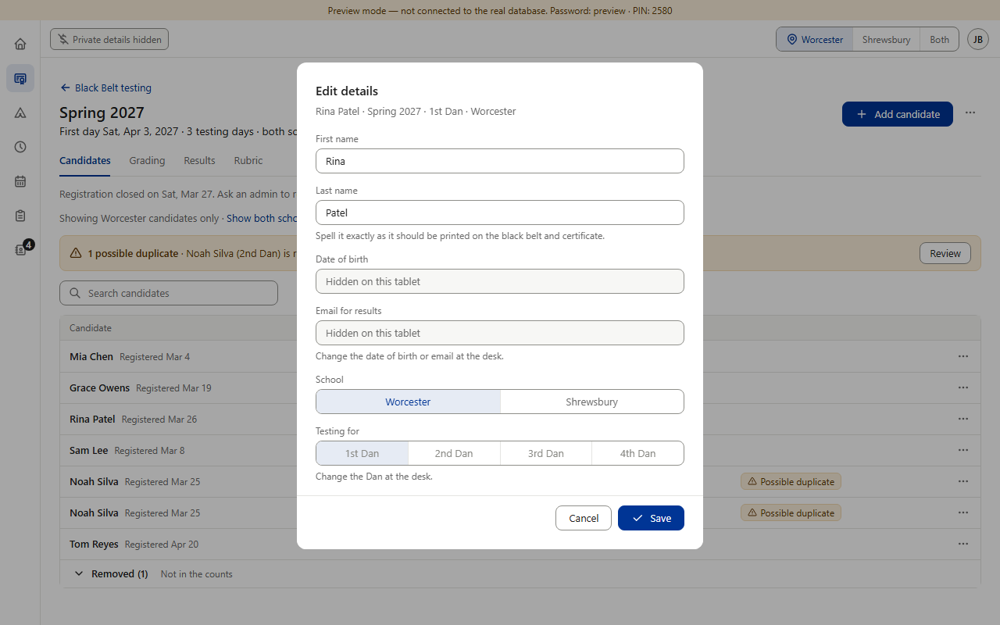
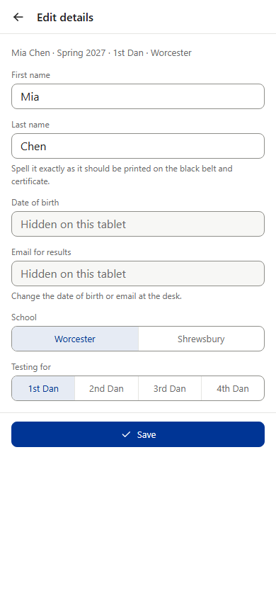
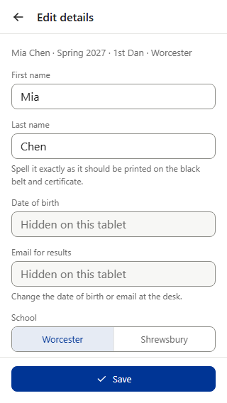

Edit details now opens on the mat tablet instead of being blocked. Date of birth and email read gray “Hidden on this tablet” and can’t be changed there (Save keeps the stored values); the hint says to change them at the desk. For staff, the Dan is grayed on every row (before, it was grayed only once paid — another “who paid” clue). The admin’s “already paid” line is gone.



